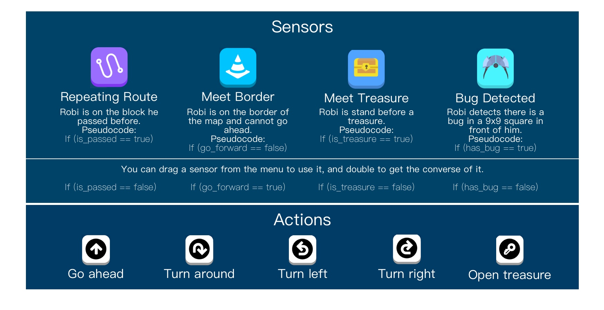

Design & Development
The design of this game is greatly affected by Stimulus-Response Theory (S-R Theory)[2], first established by John B. Watson, is central to the principles of conditioning. In this project, we think of the game as a stimulus, and we want our target users (secondary school students) could be familiar with programming thinking through playing this game. So, Our ideal response for this stimulus is students can better understand the core of programming thinking, then make them much easier to learn programming in the class.
Game Instructions


Development
The game is developed on Unity 3D, and we were coding on Visual Studio. We created a 3D scene and finished all the scripts to realize it.
The video below show Robi's action according to the correct instructions.
The video below show Robi's action according to the correct instructions. The player didn't add the sensor of bug detection, so Robi lost 1 life. Besides, the user arrange the sequence of instructions incorrectly. He put the senor of treasure after the sensor of "not face the border", so Robi passed the treasure instead of opening it(treasure is not an obstacle).